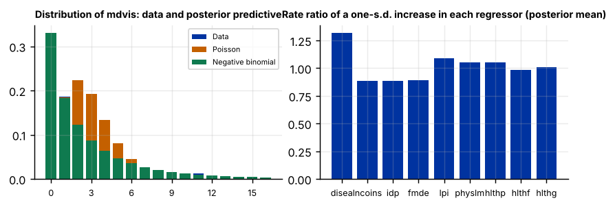

Run this model on your own data in Open Econometric Systems →
Step 1The question and the model
How do insurance terms and health affect the number of doctor visits? The data are from the RAND Health Insurance Experiment: 4,000 people, with the number of outpatient visits in a year (mdvis) as the outcome. The mean is 2.91 visits but the variance is 22.6, and 32% of the people made no visit. The regressors are the log coinsurance rate (lncoins), a dummy for an individual deductible plan (idp), the log of the participation incentive payment (lpi), the log of the deductible for those with such a plan (fmde), physical limitations (physlm), the number of chronic diseases (disea) and dummies for good, fair and poor self-rated health.
A count \(y_i = 0, 1, 2, \dots\) calls for a model with a positive mean. The log-linear form is
so that \(\exp(\beta_j)\) is a rate ratio: a one-unit increase in \(x_j\) multiplies the expected count by \(e^{\beta_j}\). Two distributions are used for the count itself.
| Family | Variance | Use |
|---|---|---|
| Poisson | equal to the mean, \(\mu\) | Counts that vary only as much as chance dictates |
| Negative binomial (NB2) | \(\mu + \alpha\mu^2\) | Counts that vary more than that (overdispersion), as almost all real counts do; \(\alpha = 0\) is the Poisson |
The mean of the visits is 2.9 and the variance 22.6, so the Poisson is already in doubt. In the Bayesian version the engine samples the coefficients (and \(\alpha\)) from their joint posterior with an independence Metropolis-Hastings sampler whose proposal is a Student-t distribution at the posterior mode, so the sampler is fast and its acceptance rate is reported. The priors are normal and weak, N(0, 5²) on the coefficient of each regressor in standard-deviation units. Both families are always fitted, so that the output can compare them on the same data.
| Output | What it answers |
|---|---|
| Rate ratios | Posterior mean, 95% interval and P(> 0) of each effect, next to the maximum-likelihood rate ratio |
| Overdispersion | The posterior of \(\alpha\) |
| Posterior predictive check | Whether simulated counts reproduce the zeros, the variance and the maximum of the real data |
| WAIC | Which family predicts new data better, with a standard error |
| Marginal effects | The effect on the expected count itself, not only on its ratio |
How to write it: the model
We model the annual number of doctor visits by Bayesian negative binomial regression with a log link, \(E(y_i) = \exp(x_i'\beta)\) and variance \(\mu_i + \alpha\mu_i^2\). The priors are N(0, 5²) on each coefficient per standard deviation of its regressor and a N(1, 2²) prior on \(\log(1/\alpha)\). The posterior is sampled by an independence Metropolis-Hastings algorithm with a Student-t proposal centred at the posterior mode (two chains of 2,000 draws after 500 burn-in draws). We compare the negative binomial with the Poisson by posterior predictive checks of the proportion of zeros, the variance and the maximum, and by the widely applicable information criterion (Watanabe 2010).
Step 2Load the data
import numpy as np
import pandas as pd
import oes_engine as oes # pip install -e open-econometric-systems/oes-engine
data = open("doctor_visits.csv").read()
d = pd.read_csv("doctor_visits.csv")
print(d.shape)
print("mean visits:", d.mdvis.mean().round(2), " variance:", d.mdvis.var().round(2), " share of zeros:", (d.mdvis == 0).mean().round(3), " maximum:", d.mdvis.max())
print(d.mdvis.value_counts().sort_index().head(8).to_string())(4000, 10) mean visits: 2.91 variance: 22.63 share of zeros: 0.322 maximum: 77 mdvis 0 1287 1 744 2 547 3 372 4 239 5 187 6 145 7 105
How to read it
The 4,000 people made 2.91 visits on average, but the variance is 22.6, almost eight times the mean, and the maximum is 77 visits. A Poisson would have a variance of 2.9. Fully 1,287 people (32%) made no visit, 744 made one and 547 two, with a long right tail. Heavy tails and many zeros are the two features that the model has to reproduce.
Step 3Estimate
x = ["lncoins", "idp", "lpi", "fmde", "physlm", "disea", "hlthg", "hlthf", "hlthp"]
spec = dict(y="mdvis", x=x, draws=2000, burn=500)
r = oes.run("bayes_count", data, spec)
oes.summary(r)
oes.show(r, "Posterior of the coefficients")
oes.show(r, "Overdispersion")Observations: 4000
Family: negative binomial
Mean of the count: 2.906
Variance of the count: 22.63
Share of zeros: 0.322
Acceptance rate: 0.65
Largest R-hat: 1.003
Smallest effective sample size: 1782.0
Posterior of the coefficients (negative binomial)
Coefficient (mean) Std. dev. Rate ratio (mean) 2.5% 97.5% P(> 0) Maximum likelihood rate ratio
Variable
const 0.6592 0.0586 0.6591
lncoins -0.0606 0.0142 0.9412 0.915 0.9689 0.0 0.9415
idp -0.2736 0.0531 0.7617 0.6871 0.8456 0.0 0.7617
lpi 0.0317 0.0097 1.0322 1.0125 1.0524 1.0 1.0323
fmde -0.0331 0.0078 0.9675 0.9525 0.9827 0.0 0.9673
physlm 0.1595 0.0721 1.1759 1.0199 1.3681 0.986 1.1704
disea 0.0425 0.0035 1.0434 1.0364 1.0506 1.0 1.0434
hlthg 0.0182 0.0469 1.0195 0.9277 1.1163 0.653 1.0168
hlthf -0.0510 0.0851 0.9538 0.81 1.1172 0.288 0.9492
hlthp 0.4542 0.1908 1.604 1.0882 2.2878 0.991 1.5636
Note: Rate ratio = exp(coefficient): the multiplicative change in the expected count for a one-unit increase in the variable. The 2.5% and 97.5% columns are the interval of the rate ratio. The last column is the classical estimate from statsmodels.
Overdispersion
Mean Median 2.5% 97.5% Maximum likelihood
Parameter
alpha (variance = mean + alpha * mean^2) 1.4007 1.3997 1.3153 1.4884 1.3945
Note: alpha = 0 is the Poisson model. A posterior far from zero means that counts vary more than a Poisson allows.How to read it
The sampler is healthy (acceptance rate 0.65, largest R-hat 1.003, smallest effective sample size 1,782). The posterior means of the coefficients are within 0.007 of the maximum-likelihood estimates (the last column shows the rate ratios side by side), as expected with a weak prior and 4,000 observations. The Bayesian answer adds the intervals and the probabilities.
An individual deductible plan (idp) cuts visits by 24% (rate ratio 0.76, 95% interval 0.69 to 0.85). A higher coinsurance rate cuts them: each unit of lncoins (the log of the coinsurance rate plus one) lowers visits by 6% (0.94, 0.92 to 0.97). Each chronic disease raises them by 4.3% (1.043, 1.036 to 1.051) and poor health by 60% (1.60, 1.09 to 2.29, posterior probability of an increase 0.99), against 18% for a physical limitation (1.18, 1.02 to 1.37). Good and fair health are not distinguishable from the excellent-health baseline: their intervals, 0.93 to 1.12 and 0.81 to 1.12, include 1.
The second table gives the overdispersion: \(\alpha = 1.40\) (95% interval 1.32 to 1.49), far from the Poisson value of 0. The variance of a person with a mean of 3 visits is \(3 + 1.4 \times 9 = 15.6\), five times what a Poisson allows.
Step 4Does the model fit? Predictive checks and WAIC
oes.show(r, "Posterior predictive check")
oes.show(r, "Model comparison")
oes.plot(r)Posterior predictive check
Zeros (observed) Zeros (predicted) p-value Variance (observed) Variance (predicted) p-value Max (observed) Max (predicted)
Model
Poisson 0.3217 0.0813 0.000 22.63 4.581 0.000 77.0 21.4
Negative binomial 0.3217 0.3311 0.383 22.63 20.120 0.293 77.0 69.8
Note: Counts are simulated from the posterior and compared with the data. A p-value near 0 (two-sided) means the model cannot reproduce that feature of the data.
Model comparison (WAIC, higher elpd is better)
elpd (WAIC) Effective parameters Difference from the best Std. error of the difference
Model
Poisson -12881.7 69.7 -4247.3 337.4
Negative binomial -8634.4 14.0 0.0
Note: WAIC (Watanabe 2010) estimates the out-of-sample log predictive density. A difference of more than two or three standard errors is clear.
How to read it
The check simulates a new data set from each fitted model and compares three features with the real data. The Poisson predicts 8% zeros against 32% in the data, a variance of 4.6 against 22.6 and a maximum of 21 against 77: all three p-values are zero (the one for the maximum is not shown, but the Poisson never comes near 77), so it cannot have produced these data. The negative binomial predicts 33.1% zeros (p = 0.38), a variance of 20.1 (p = 0.29) and a maximum of 70: it reproduces all three.
WAIC says the same in one number: the expected log predictive density is \(-12{,}882\) for the Poisson and \(-8{,}634\) for the negative binomial, a difference of 4,247 with a standard error of 337, or 12.6 standard errors. The Poisson also uses far more effective parameters (69.7 against 14.0), a sign that it is stretching to fit counts it cannot describe. The first chart compares the distribution of the counts: the Poisson puts little at zero and almost nothing beyond 10, the negative binomial follows the data. The second chart is the rate ratio per one-standard-deviation increase of each regressor.
Step 5Effects on the count, not only the ratio
oes.show(r, "Average marginal effects")Average marginal effects on the expected count
Mean Std. dev. 2.5% 97.5%
Variable
lncoins -0.1783 0.0439 -0.2644 -0.0846
idp -0.8004 0.1590 -1.1233 -0.4773
lpi 0.0917 0.0289 0.0377 0.1453
fmde -0.0960 0.0237 -0.1430 -0.0526
physlm 0.4691 0.1988 0.1410 0.9358
disea 0.1251 0.0116 0.1055 0.1515
hlthg 0.0486 0.1320 -0.2133 0.3205
hlthf -0.1513 0.2456 -0.5891 0.3207
hlthp 1.3345 0.5611 0.2950 2.4536
Note: Change in the expected count per one-unit increase, averaged over the sample (exposure included): the rate ratio translated to counts.How to read it
A rate ratio of 0.76 does not say how many visits a person loses; the average marginal effect does, averaged over the sample. An individual deductible plan reduces visits by 0.80 a year (95% interval \(-1.12\) to \(-0.48\)); each chronic disease adds 0.125 (0.106 to 0.151); poor health adds 1.33 visits (0.30 to 2.45), with a wide interval because only a few people report poor health. A change that looks small as a ratio can be large in visits for people who already use much care, and the other way round.
Step 6Diagnostics: the sampler and the classical estimate
oes.show(r, "MCMC convergence")
import statsmodels.api as sm
ml = sm.NegativeBinomial(d.mdvis, sm.add_constant(d[x])).fit(disp=0)
print("largest gap between the posterior mean and the maximum-likelihood coefficient:",
np.abs(np.array([float(row[1]) for row in r["tables"][0]["rows"]]) - ml.params.values[:-1]).max().round(4))MCMC convergence diagnostics
R-hat Effective sample size
Parameter
lpi 1.001 1782.0
physlm 1.001 1815.0
alpha 1.001 1825.0
hlthg 1.003 1882.0
const 1.000 1897.0
lncoins 1.000 1898.0
hlthf 1.002 1919.0
disea 1.000 1923.0
Note: The 8 parameters with the smallest effective sample size (of 11). Independence Metropolis-Hastings with a Student-t proposal at the posterior mode; acceptance rate 0.65.
largest gap between the posterior mean and the maximum-likelihood coefficient: 0.0067How to read it
The eight slowest parameters have R-hat from 1.000 to 1.003 and effective sample sizes from 1,782 to 1,923 out of 4,000 draws, which is near the best a sampler can do (the chains are nearly independent). The posterior mean and the maximum-likelihood coefficient differ by at most 0.0067 across the ten parameters. This is the usual check that a Bayesian count model with a weak prior has not gone astray: with this much data it should agree with maximum likelihood, and it does.
Step 7Robustness: the prior
rows = []
for s in (1, 5, 25):
rs = oes.run("bayes_count", data, dict(spec, prior_sd=s, draws=1000, burn=300))
t = {q[0]: q for q in rs["tables"][0]["rows"]}
rows.append([s, t["idp"][3], t["hlthp"][3], t["hlthp"][4], t["hlthp"][5]])
print(pd.DataFrame(rows, columns=["prior s.d.", "idp rate ratio", "hlthp rate ratio", "2.5%", "97.5%"]).to_string(index=False)) prior s.d. idp rate ratio hlthp rate ratio 2.5% 97.5%
1 0.7604 1.6076 1.1079 2.3777
5 0.7603 1.6077 1.1079 2.3781
25 0.7603 1.6077 1.1079 2.3781How to read it
The prior standard deviation is varied from 1 to 25 (per standard deviation of the regressor). The rate ratio of the deductible plan is 0.7604, 0.7603 and 0.7603; that of poor health is 1.608 in all three, with the interval 1.108 to 2.378 unchanged to the third decimal. With 4,000 observations the data decide. In a small sample or with a rare event the prior matters more and you should show a table like this one.
Step 8Diagnostics: do the intervals cover?
Simulate 100 data sets of 300 observations from a negative binomial with known coefficients (the rate ratio of \(x_1\) is \(e^{0.4} = 1.49\)) and count how often the 95% interval contains it.
rng = np.random.default_rng(0)
hit = []
for s in range(100):
n = 300; x1, x2 = rng.normal(size=n), rng.normal(size=n)
mu = np.exp(0.5 + 0.4 * x1 - 0.3 * x2)
y = rng.poisson(rng.gamma(2.0, mu / 2.0)) # negative binomial with alpha = 0.5
rs = oes.run("bayes_count", pd.DataFrame({"y": y, "x1": x1, "x2": x2}).to_csv(index=False), dict(y="y", x=["x1", "x2"], draws=500, burn=250, seed=s))
t = {q[0]: q for q in rs["tables"][0]["rows"]}["x1"]
hit.append(float(t[4]) <= np.exp(0.4) <= float(t[5]))
print("share of 95% intervals for the x1 rate ratio that contain the truth:", np.mean(hit).round(2), "out of", len(hit))share of 95% intervals for the x1 rate ratio that contain the truth: 0.93 out of 100
How to read it
The 95% interval contains the true rate ratio in 93 of 100 samples, within simulation error of the nominal 95% (the standard error with 100 samples is about 2 points). The test suite also checks the posterior means against maximum likelihood for both families, recovery of the coefficients and of \(\alpha\), the exposure option, and that WAIC and the predictive check pick the right family when the data are Poisson and when they are overdispersed.
Step 9When the zeros are the question: arrests
Many count outcomes have more zeros than a negative binomial predicts, and a zero-inflated or hurdle model is then used. The predictive check tells you whether you need one. The data are the 1986 arrests of 2,725 young men (Wooldridge CRIME1), of whom 72% were not arrested at all.
arr = open("arrests.csv").read()
a = oes.run("bayes_count", arr, dict(y="narr86", x=["pcnv", "avgsen", "tottime", "ptime86", "qemp86", "inc86", "black", "hispan", "born60"], draws=1500, burn=500))
oes.show(a, "Posterior predictive check")
oes.show(a, "Model comparison")
oes.show(a, "Overdispersion")Posterior predictive check
Zeros (observed) Zeros (predicted) p-value Variance (observed) Variance (predicted) p-value Max (observed) Max (predicted)
Model
Poisson 0.7229 0.6860 0.000 0.738 0.466 0.000 12.0 4.9
Negative binomial 0.7229 0.7298 0.587 0.738 0.690 0.427 12.0 8.5
Note: Counts are simulated from the posterior and compared with the data. A p-value near 0 (two-sided) means the model cannot reproduce that feature of the data.
Model comparison (WAIC, higher elpd is better)
elpd (WAIC) Effective parameters Difference from the best Std. error of the difference
Model
Poisson -2261.3 15.0 -92.0 25.0
Negative binomial -2169.3 11.9 0.0
Note: WAIC (Watanabe 2010) estimates the out-of-sample log predictive density. A difference of more than two or three standard errors is clear.
Overdispersion
Mean Median 2.5% 97.5% Maximum likelihood
Parameter
alpha (variance = mean + alpha * mean^2) 0.9468 0.9449 0.7458 1.1842 0.9288
Note: alpha = 0 is the Poisson model. A posterior far from zero means that counts vary more than a Poisson allows.How to read it
The Poisson predicts 68.6% zeros against the observed 72.3% and a variance of 0.47 against 0.74 (p-values of zero for both). The negative binomial predicts 73.0% zeros (p = 0.59) and a variance of 0.69 (p = 0.43): it reproduces both, so there is no sign of an excess of zeros beyond what overdispersion generates, and no need for a zero-inflated model here. WAIC prefers the negative binomial by 92 (standard error 25, 3.7 standard errors), and \(\alpha\) is 0.95 (0.75 to 1.18). Had the negative binomial predicted too few zeros with a small p-value, that would be the signal to use the zero-inflated or hurdle models of the Microeconometrics Guide.
Step 10Write the results
How to write it: results
Annual doctor visits are strongly overdispersed (mean 2.9, variance 22.6, 32% zeros), and a Poisson model cannot reproduce them (predicted share of zeros 8%, variance 4.6; posterior predictive p-values of 0.00), while the negative binomial can (33% zeros, variance 20.1; p = 0.38 and 0.29). WAIC favours the negative binomial by 4,247 log points (12.6 standard errors); the overdispersion parameter is 1.40 (95% interval 1.32 to 1.49). An individual deductible plan reduces expected visits by 24% (rate ratio 0.76, 95% interval 0.69 to 0.85; 0.80 visits a year), each unit of log coinsurance by 6% (0.94, 0.92 to 0.97), and each chronic disease raises them by 4.3% (1.043, 1.036 to 1.051); poor health raises them by 60% (1.60, 1.09 to 2.29). The sampler's R-hat is at most 1.003, the effective sample sizes exceed 1,700, the posterior means are within 0.007 of the maximum-likelihood estimates and the results do not change with prior standard deviations from 1 to 25. In simulation the 95% intervals covered the truth in 93 of 100 samples.
| Report | What | Where |
|---|---|---|
| Model | Family, link, priors, sampler | Step 1 |
| Effects | Rate ratios, intervals, P(> 0) | Step 3 |
| Fit | Predictive check, WAIC | Step 4 |
| Size of the effects | Average marginal effects | Step 5 |
| Convergence | R-hat, effective sample sizes, comparison with maximum likelihood | Step 6 |
| Robustness | Other prior standard deviations | Step 7 |
| Coverage | Simulation | Step 8 |
| Excess zeros | Predictive check on arrests | Step 9 |
References. Cameron and Trivedi (2013), Regression Analysis of Count Data, Cambridge University Press; Winkelmann (2008), Econometric Analysis of Count Data, Springer; Watanabe (2010), Journal of Machine Learning Research; Gelman, Carlin, Stern, Dunson, Vehtari and Rubin (2013), Bayesian Data Analysis, CRC Press; Deb and Trivedi (2002), Journal of Econometrics; Hilbe (2011), Negative Binomial Regression, Cambridge University Press.